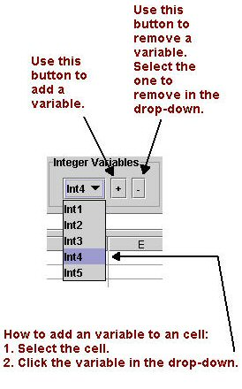

Index
How to use Variables.
The variables are only visible and can only be used in the
Function Editor where they are created.
Example notations:
- Int3 - Integer variable
- Flt2 - Float variable
The index for the variables increases for each new variable that is
added.
